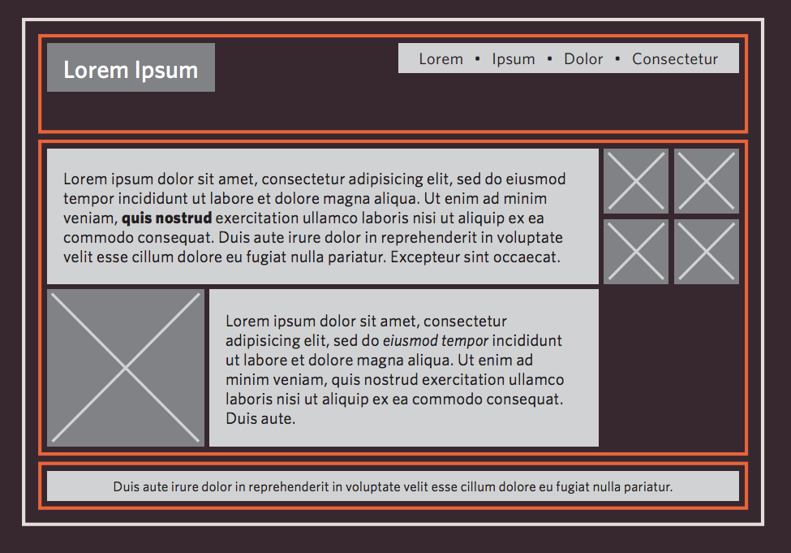

En esta clase veremos
- Repaso
- CSS3: Transiciones
Repaso
Recordar que todo elemento en nuestro sitio se comporta como una caja. Estas pueden ser del tipo bloque o en línea. Nosotros podemos controlar cuanto espacio toma cada caja con las propiedades width y para separar las cajas podemos usar margin padding
Si un elemento bloque se encontrara dentro de otro elemento bloque, el elemento que está afuera se le conoce como caja contenedora
